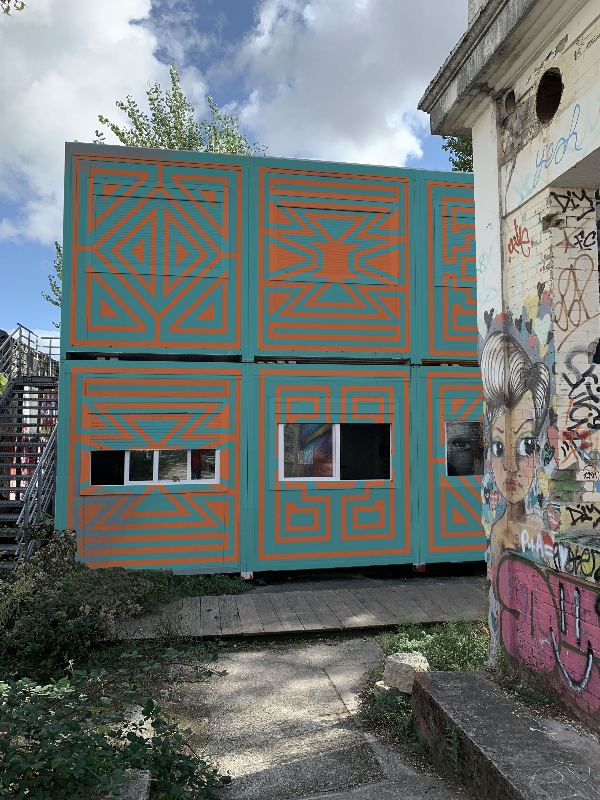
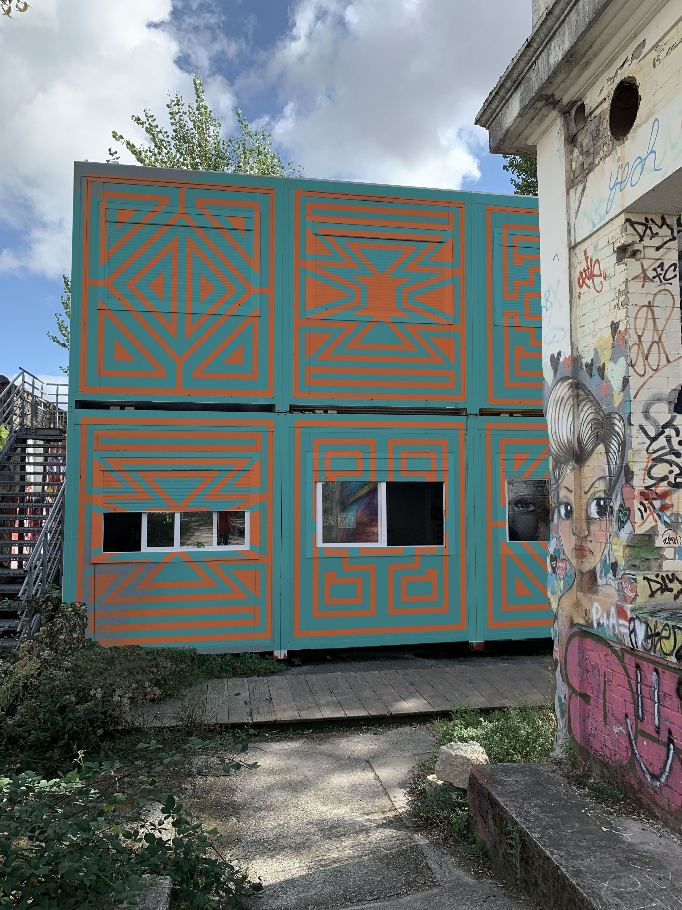

DARWIN
Projet issus d'une demande réel d'un lycée Bordelais situé dans un tiers lieux nommé "Darwin écosystème".
On nous a demandé (Camille Vernhes-Chazeau et moi) de concevoir une fresque
au sol et sur les murs extérieurs du lycée
Edgar Morin-Darwin dans le cadre d’une
activité de collaboration et de participation
des lycéens sur le thème « l’Afrique, berceau
du futur ».
Dans ce sens, nous avons fait des recherches
sémiologiques sur les cultures africaines,
grâce auxquelles nous avons pu développer
des expérimentations graphiques personnelles.
Celles-ci nous on menées à trois pistes
graphiques, trois propositions applicables à
différents espaces du lieu.
 
